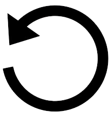

Hola soy estudiante del CECyTE e-35
estoy cursando el sexto semestre y final
MI PASATIEMPO FAVORITO ES JUGAR VIDEOJUEGOs
MI PASATIEMPO FAVORITO ES JUGAR VIDEOJUEGOs

Se abrirá en ventana modal
Se abrirá en ventana modal

